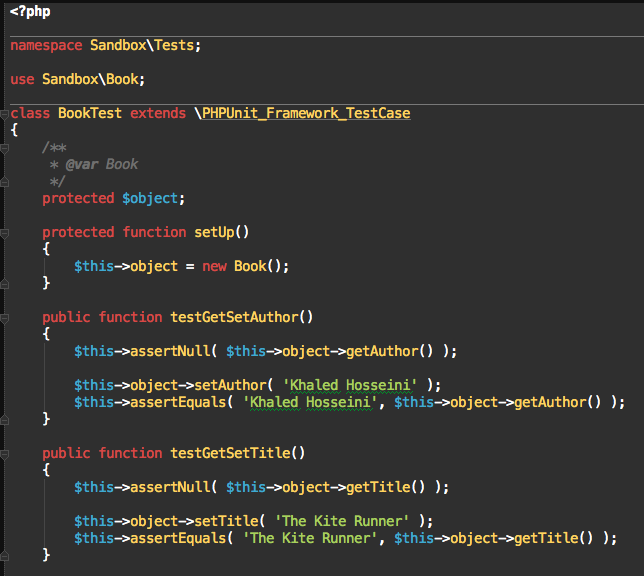

Introduction to Unit Testing
with PHPUnit
Fraser Reed / @fraser_reed

About Me: Fraser Reed
| databases | scaling |
| testing | automating |
Topics
| What is unit testing? |
| Why should I test my code? |
| Background on PHPUnit |
| Installation |
| The basics |
| Simple example |
| Working with resources |
| Questions? |
What is Unit Testing?
What is Unit Testing?
Testing individual units of code to determine if they are fit to use.
The smallest testable part of an application:
functions, classes and methods
Prove that code performs within a set of guidelines
Unit testing is a fundamental building block of writing professional, maintainable code
Why should I test my code?

Why should I test my code?
Confidence in your code
Prevent breaking changes
Speeds up future development
Helps write clean code
Background on PHPUnit
Written by Sebastian Bergmann
Installation
Installation via PHAR
wget https://phar.phpunit.de/phpunit.phar
php phpunit.phar
Installation via Composer
{
"require-dev": {
"phpunit/phpunit": "4.5.*"
}
}
The basics
The tests for a class Class go into a class ClassTest.

ClassTest inherits (most of the time) from PHPUnit_Framework_TestCase.
Alternatively, you can extend PHPUnit_Framework_TestCase to override
or customize basic functionality.
The tests are public methods that are named test*.
Inside the test methods, assertion methods are used to assert that an actual value matches an expected value.

Running the tests
Direct execution
Execution via phpunit.xml
Execution via phpunit.xml

vs.
Execution via phpunit.xml with code coverage
Execution via phpunit.xml with code coverage
Execution via phpunit.xml with code coverage
Simple example
Assertions
Testing for exceptions
Working with resources

Extending the concepts
Takeaways
Start small, incrementally improve
Keep tests simple
Test for successes and failures
Strive for quality
Questions?
Fraser Reed